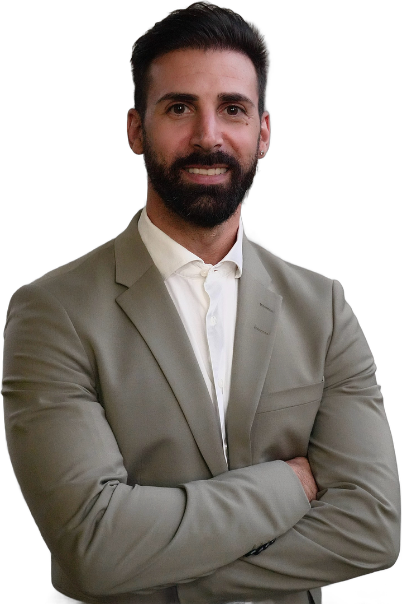
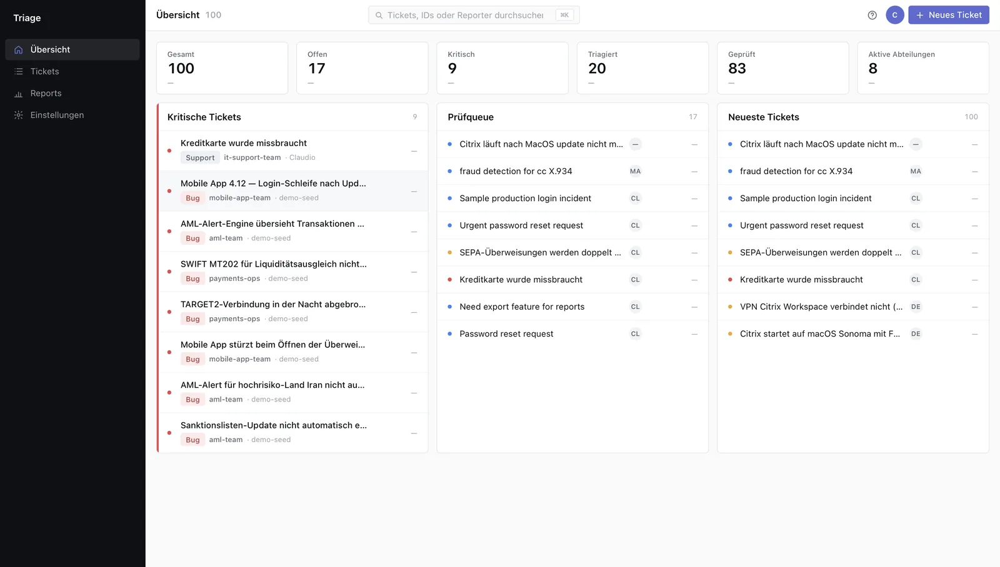
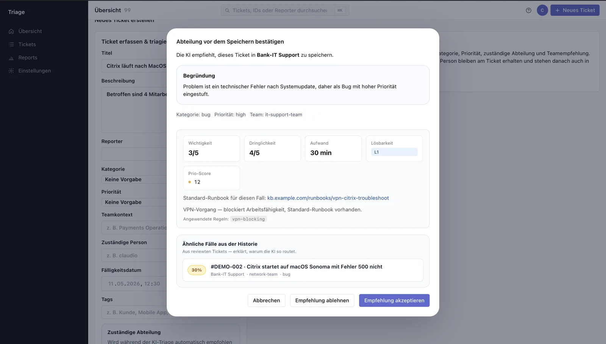
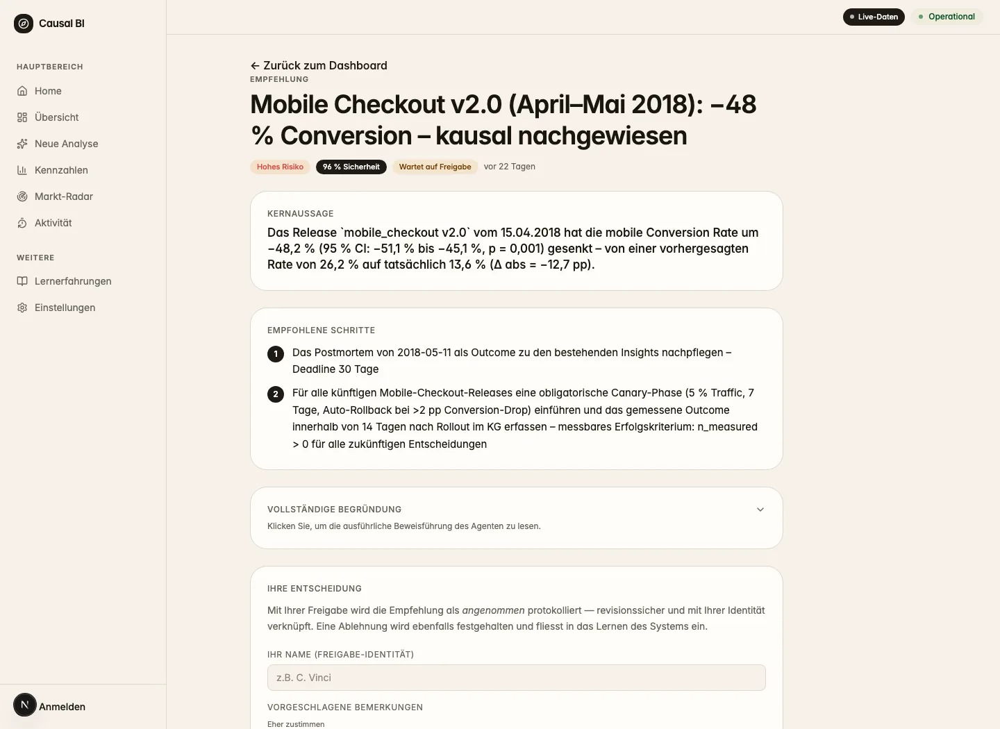
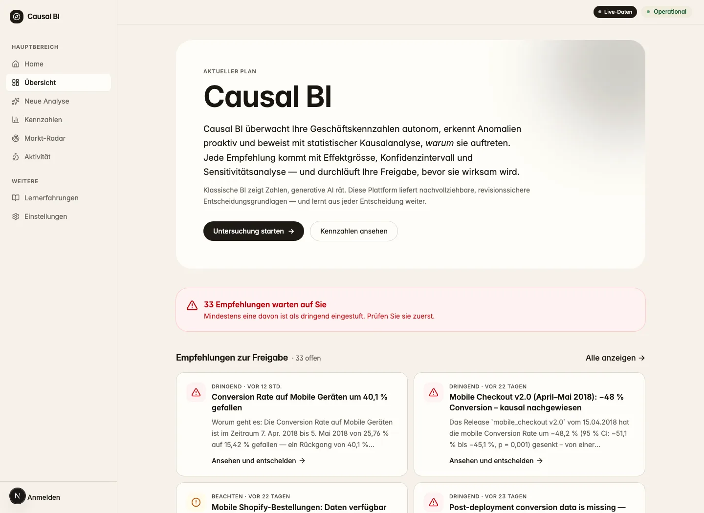
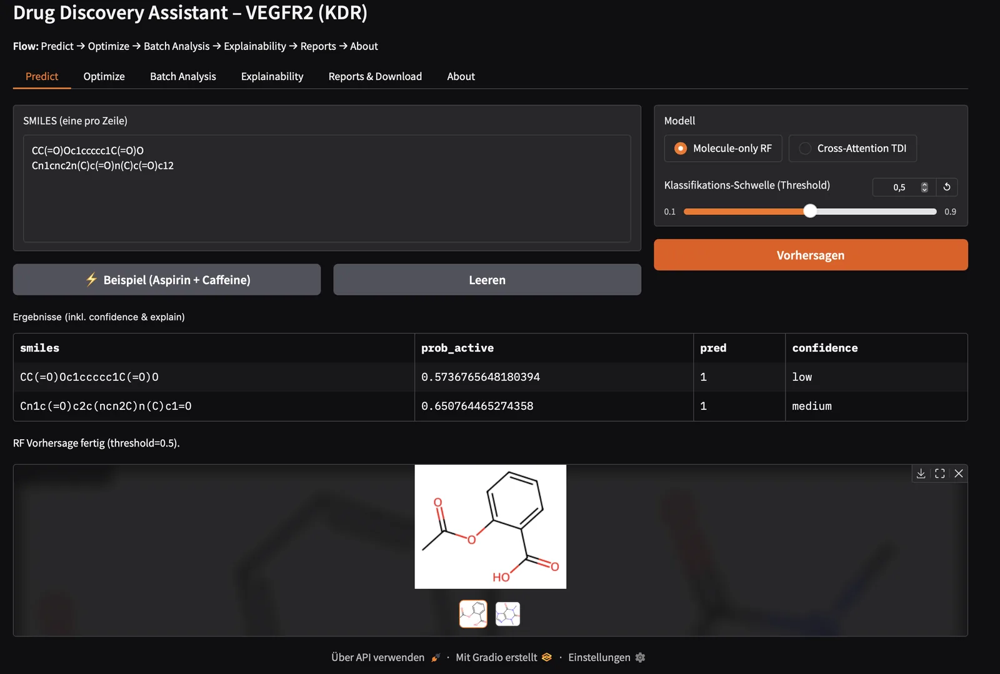
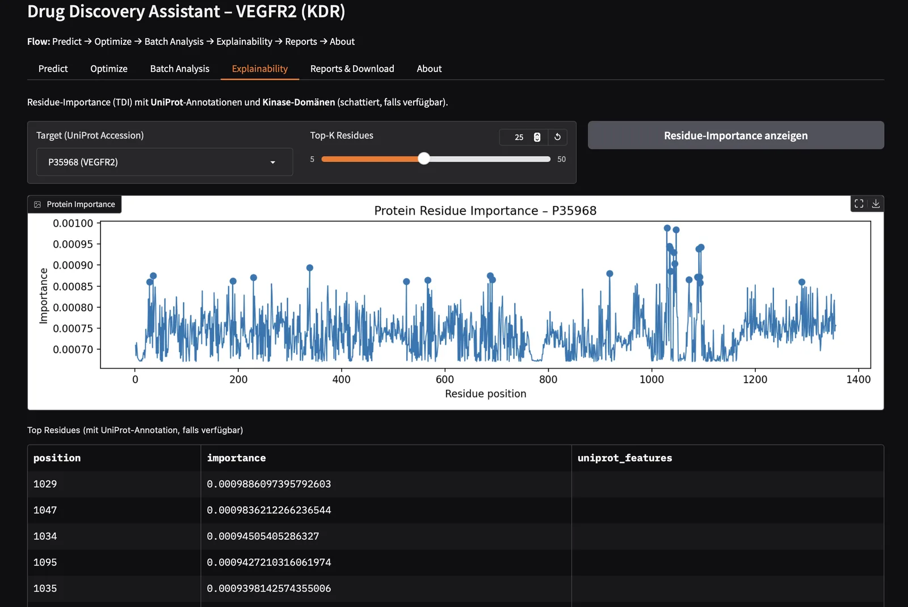

01
Business Analyse
Prozesse verstehen
Ich spreche mit dem Fachbereich, modelliere Abläufe und halte Anforderungen so fest, dass Business und Entwicklung dasselbe verstehen.
bpmn · uml · user stories · scrum

Business AI Student, FHNW
Ich verbinde Geschäftsprozesse mit künstlicher Intelligenz. Im dritten Jahr studiere ich Business AI an der FHNW Hochschule für Wirtschaft und baue Agenten, Dashboards und Prototypen für echte Abläufe. Davor war ich über sechs Jahre in Kundenberatung und Führung tätig, vom Praktikanten zum Clubmanager bei PureGym und im Verkauf bei Swisscom. Ich suche eine Stelle in Business Analyse, Daten oder KI.
Projekte
Projekte aus Studium und Eigeninitiative, von Agentensystemen bis zur App-Gestaltung. Code und Screenshots stammen direkt aus meinen GitHub-Repositories.


github.com/clavinci94

github.com/clavinci94

github.com/clavinci94ohne abstimmung
mit koordinierten agenten
Kompetenzen
So gehe ich an Projekte heran, und die Werkzeuge, die ich dafür einsetze.
Business Analyse
Ich spreche mit dem Fachbereich, modelliere Abläufe und halte Anforderungen so fest, dass Business und Entwicklung dasselbe verstehen.
bpmn · uml · user stories · scrum
Daten und BI
Ich bereite Daten auf, modelliere sie und mache Kennzahlen in Dashboards sichtbar, damit Entscheide auf Fakten beruhen.
sql · etl · sternschema · power bi · qlik
KI-Entwicklung
Ich entwickle Prototypen mit LLMs und Agenten, vom Backend bis zur Oberfläche, in einer sauberen Architektur mit CI/CD.
python · fastapi · litellm · rag · react
Werdegang
Bachelor Business AI
seit 2024, aktuell im 3. Jahr
Projekte zu Agentensystemen, generativer KI, Datenanalyse und Supply Chain Management.
Werkstudent Business AI
Februar bis Mai 2026
Prozesse in BPMN modelliert, Anforderungen erhoben und eine Idee für KI-gestützte Automatisierung konzipiert.
Sales Consultant B2C, über Umano AG
bis 2024
Privatkundinnen und Privatkunden beraten und Verkaufsziele verantwortet. Swisscom hat mir anschliessend eine Festanstellung angeboten.
Vom Praktikanten zum Clubmanager, Lenzburg
2017 bis 2023
Team geführt, KPIs und Budget des Clubs verantwortet und den Betrieb im Alltag organisiert.
Zusammenarbeit
Drei Möglichkeiten, je nachdem, was Ihr Team gerade braucht.
Passend für: Teams, die Unterstützung in Analyse, Daten oder KI suchen, mit 80 % ab sofort.
Passend für: Unternehmen mit Praktika in GenAI, Data & AI oder Business Analyse.
Passend für: Einstiegsrollen als Business Analyst, Data oder AI Engineer.
Kontakt
Ich antworte in der Regel innerhalb eines Tages.